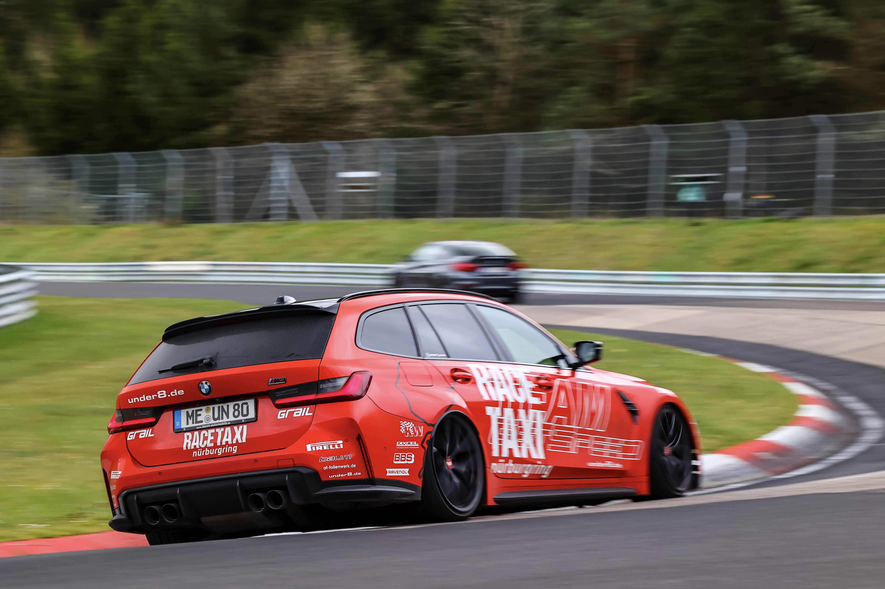
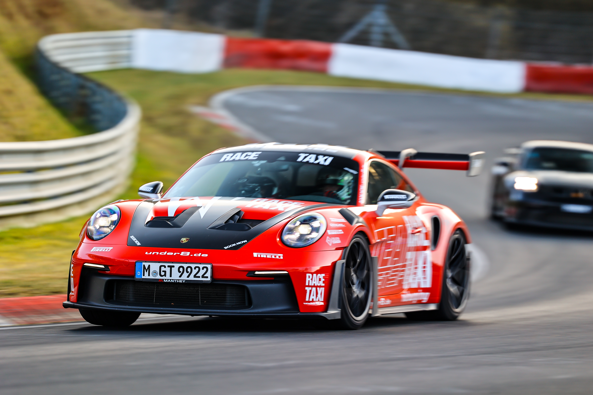

Socio oficial
Vive la Nordschleife con GetSpeed.
Reserva tu experiencia GetSpeed directamente a través de Nürburg Guide.
Experiencia GetSpeed
En la Nordschleife
BMW G81 Race Taxi y Porsche 992 GT3 RS - dos vehículos de la experiencia GetSpeed.

Porsche 992 GT3 RS
Booking
Reserva tu experiencia
Las fechas y ofertas disponibles se muestran directamente en el siguiente módulo de reservas.
La reserva se procesa mediante RaceTicket / GetSpeed. La disponibilidad, los precios y las condiciones de reserva proceden del sistema de reservas.